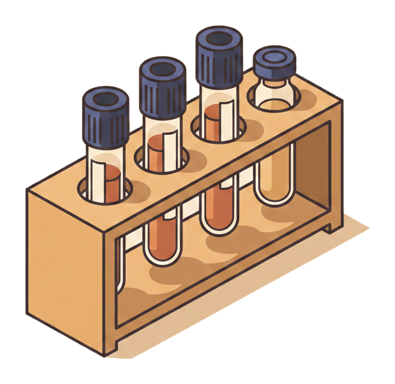
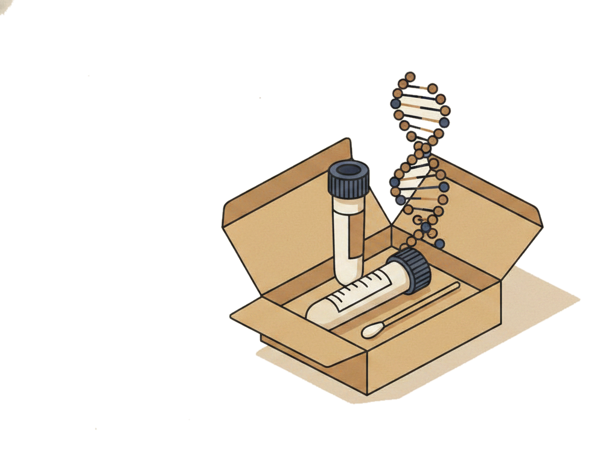
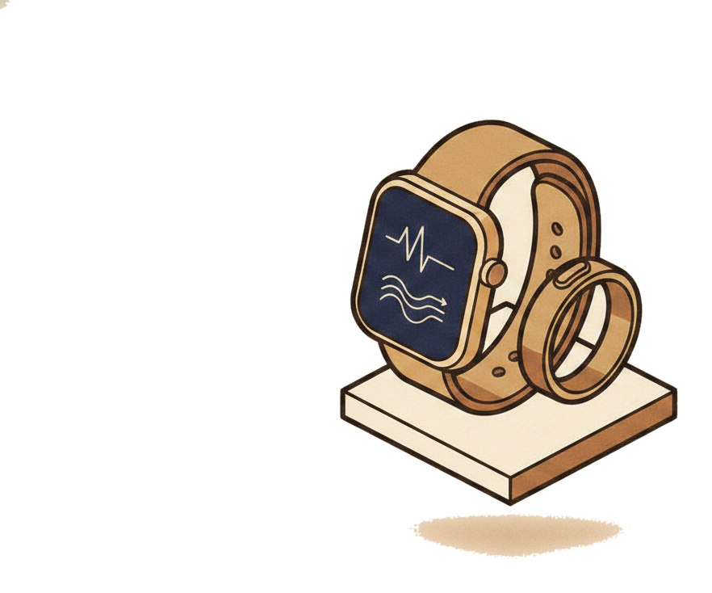
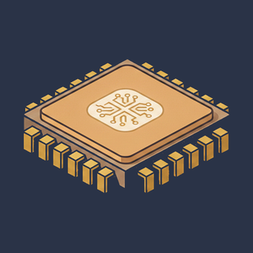
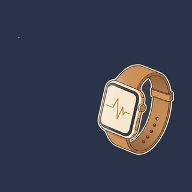

Your best days are still ahead.
Physician-led preventive medicine, powered by AI and your own genetic, lab, and wearable data. One physician who sees the whole picture, and a plan for what matters next.
001 / 002
Three sliders · move your own curve in real time
The story of your future is written on top of this curve.
One line, from age 30 to 90. Watch what it does.
It's your body's ability to do what you want in life.
High on the curve, you do anything you want. Lower down, you start depending on other people. The same line decides whether your seventies look like hard hikes or hard stairs.
The slope is being written right now, quietly, by what you do and don't prevent.
A serious event does not just cost you a bad year. It drops the whole curve and it rarely comes all the way back. Most of these are visible years before they happen, in markers a standard physical never runs.
The curve is not destiny. Aleron can help you plot a new trajectory.
Catch the risk early, train the right things, and the line lifts and stretches. The work is not adding empty years. It is keeping you in the part of the curve where life is still yours to run.
The chart is live. Move Conditioning, Lifestyle, and Underlying Risk and watch the bands you keep or lose.
See how Aleron reads your curveWe read advanced labs, genetics, wearable data, and imaging to help you shape the curve.
Four streams, one picture. The signals most physicals never collect, read together instead of one number at a time.




Getting your Aleron MD plan is straightforward.
No forty-page intake. No waiting room. Four steps from sign-up to a plan a physician stands behind.
Onboarding takes fifteen minutes.
Demographics, family history, lifestyle, and screening history, collected the way every other app on your phone does it. Then your wearable connects in two taps and starts streaming the signals your physician will actually use.


A small kit arrives at your door.
Spit in the tube, drop it in the prepaid mailer. The 163-gene Invitae panel screens for the variants that actually change a care plan: moderate-penetrance cancer risks, cardiovascular variants, and pharmacogenomic markers that change which drugs work for you.
Bloodwork on your terms.
Draw the same Elite panel two ways. Walk into your nearest Quest patient service center, or skip the trip with an at-home capillary kit that ships to your door. Either way you get a full metabolic, cardiovascular, and inflammatory workup, including the ApoB and Lp(a) markers most physicals never order.
A physician in your corner, on your schedule.
Aleron combines labs, genetics, wearable trends, records, and physician judgment into a risk picture, domain by domain. Talk it through live on a video visit, or handle it asynchronously and message your care team whenever it suits you. The output is not a report. It is a plan for what matters next.


This is just the start.
Aleron doesn't hand you a report and disappear. It works for you between visits, every day.

Aleron AI, grounded in your data.
It stays on between visits, grounded in your labs, genetics, wearables, imaging, and care plan. It watches for changes and keeps your physician current.

Continuous biometric monitoring.
Sleep, HRV, resting heart rate, and activity, tracked and analyzed over time. We catch the signal before you feel the symptom.
Twice-yearly plan review.
Aleron reviews labs, wearable trends, records, symptoms, goals, and new research, then updates your priorities around what actually changed in your risk.
Nutrition coaching, built into your plan.
Guidance shaped by your labs, goals, preferences, and metabolic risk, not a generic meal plan.
Behavioral therapist support.
Help turning priorities into routines and follow-through that fit a real life.
Unlimited physician access.
24/7 telemedicine with a physician who already has your full picture: your data, your genetics, your history. No repeating yourself.
The best part isn't the labs or the engine. It's getting a voice message from my doctor on a Tuesday afternoon explaining what to do next, like a friend who happens to be brilliant.
Most members leave their first review with a care plan their PCP wouldn't have given them.
Same labs. Same body. Different level of care.
of new members get a plan that materially differs from what their PCP would do.
receive an actionable genetic finding: a pathogenic variant that changes screening or medication for life, almost never tested in standard care.
receive a pharmacogenomic flag: a drug picked or dosed differently, from statin metabolism to SSRI response to clopidogrel non-response.
show a CAC reclassification: coronary calcium changes the statin decision in roughly one in three intermediate-risk patients.
find Lp(a) elevated: a lifetime cardiovascular-risk reclassification plus family screening, from a marker rarely measured in standard panels.
Drivers overlap; the headline figure is the union, not the sum. Drawn from PREVENT (AHA 2023), CAC reclassification studies (MESA, CAC Consortium), and pharmacogenomics plus clinical-grade genetic-panel actionable yield in adult preventive populations.
Your curve is already being written. Decide who holds the pen.
Membership opens in waves, in California and Texas today.
One physician, your full data picture, and a plan that keeps working between visits.
$3,500 to $4,200 a year, all in. Advanced labs, the 163-gene panel, continuous monitoring, and unlimited physician access. No surprise invoices.
Bring physician-led preventive care to the people you cover.
We'll show you how Aleron fits alongside your existing benefits.
For reference, executive-health programs run far above this: Human Longevity $8,000 to $19,500 a year, Fountain Life $10,500 and up, Wild Health $25,000 and up.